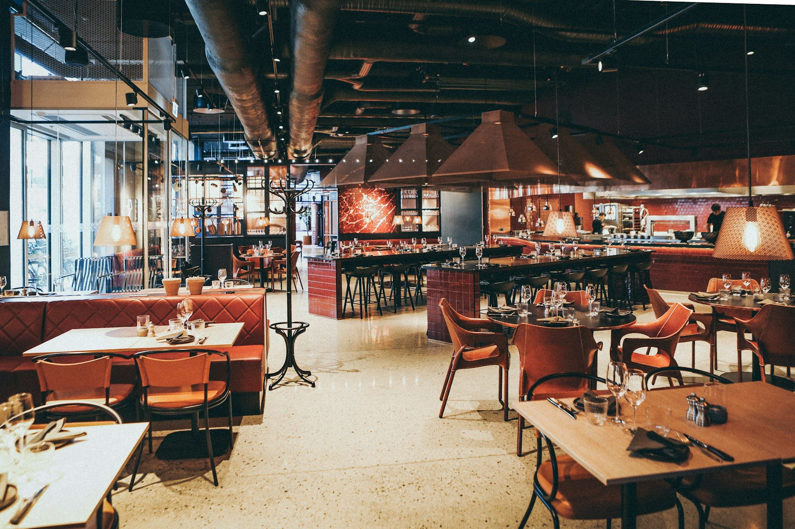
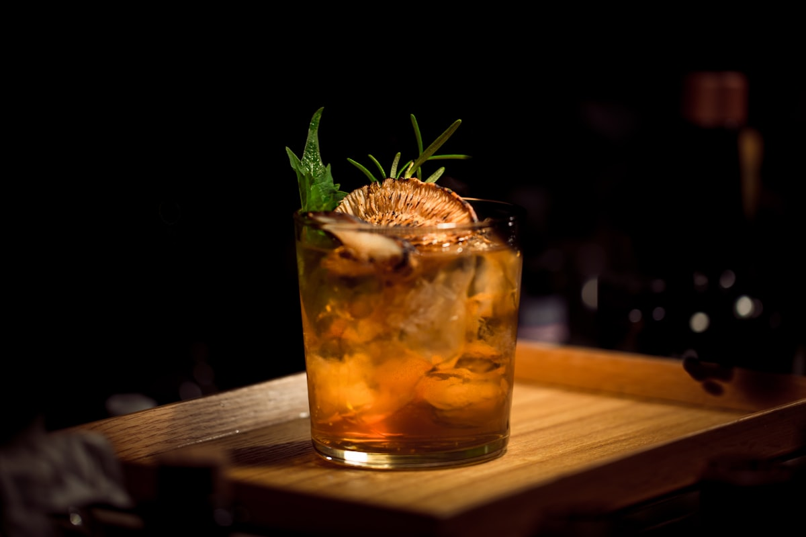
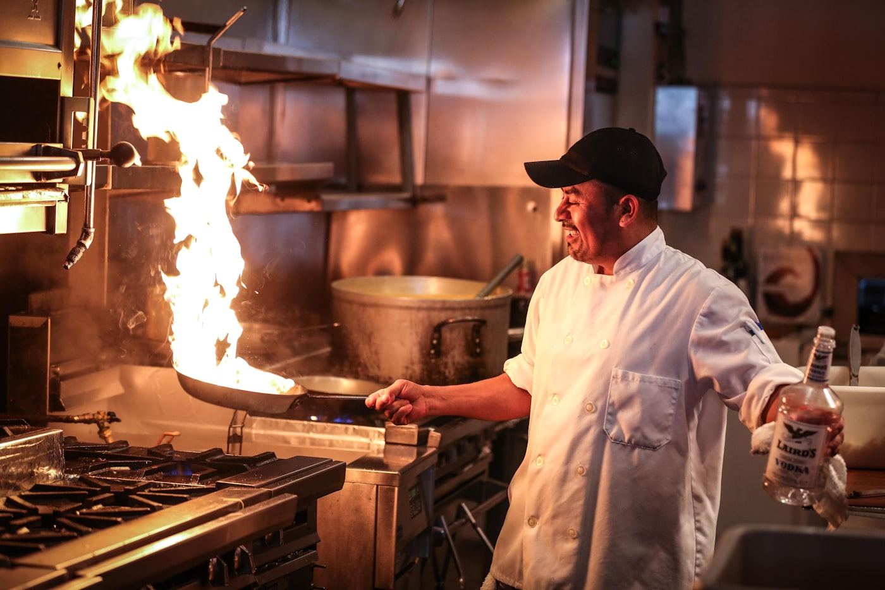
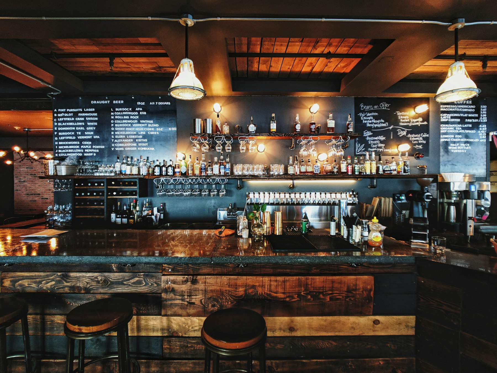

Hereford ribeye
Grilled over coals, with chips and watercress.
28
Islington
A neighbourhood restaurant on Elm Row. Seasonal cooking, a short menu, and wine we actually want to drink.
Reserve a tableWelcome
We cook what comes in that morning: Devon crab when we can get it, Hereford beef on Fridays, greens from a farm in Kent. The menu stays short so everything is cooked to order.
Please book for dinner. If you drop in, we will seat you at the bar when we can. Sunday is roast only, from 1pm.

Grilled over coals, with chips and watercress.
28
Brown butter, cucumber, and dill.
24
Salted caramel, vanilla ice cream.
11

